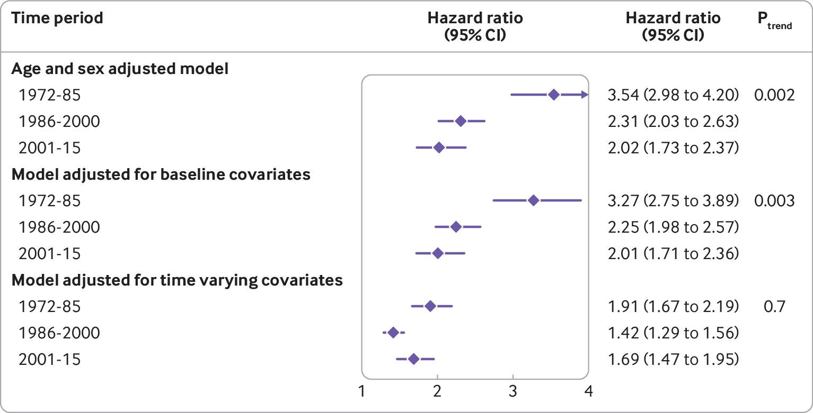
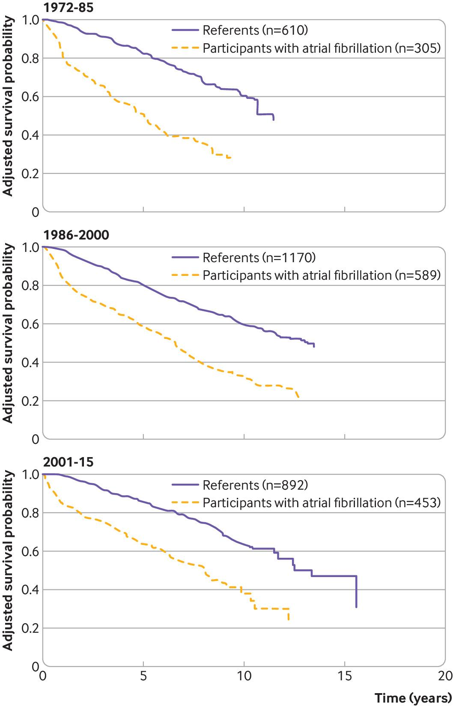

Less life-year loss in AF patients over the last decade.
In the Framingham Heart Study, the mean number of life years lost to AF at 10 years improved
significantly over the past 45 years, but a 2-year gap compared with individuals without AF was still present.

Temporal trends for the association between newly diagnosed atrial fibrillation and all cause mortality.
Newly diagnosed atrial fibrillation was associated with an increased hazard of
death over three time periods; 1972-1985, 1986-2000, and 2001-2015. In the model
adjusted for time varying covariates, there was no evidence of a temporal trend in hazard ratios (Ptrend=0.70).

Adjusted survival curves for participants with atrial fibrillation and matched referents.
To assess the loss in lifetime over 10 years after a diagnosis of AF,
the authors analyzed 305 participants with AF and 610 matched referents in time
period 1, 589 participants and 1170 referents in period 2, and 453 participants
and 892 referents in period 3. The adjusted difference in the restricted mean
survival time at 10 years between participants with AF and referents was
−2.85 years (95%CI −3.21 to −2.50) in time period 1 (1972-1985),
−2.10 years (95%CI −2.35 to −1.84) in period 2 (1986-2000), and −1.99 years (95% CI −2.26 to −1.72) in period 3 (Ptrend=0.03).